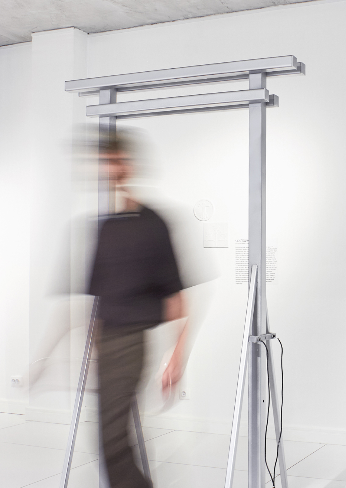
What Is a “Non-place” According to Marc Augé?
Video explainer about the sociological and philosophical concept of the “non-place”.
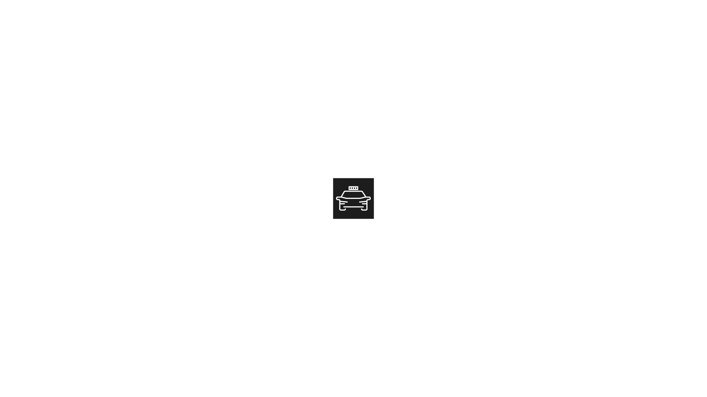
“Non-place” is a concept introduced by Marc Augé to describe spaces of transit, temporary presence and interaction in which personal identity recedes into the background.
The project is built around white space — a metaphor for the non-place, contrasted with anthropological place. A bright, sterile and easily scalable environment defines the entire visual language and becomes the main carrier of the idea.
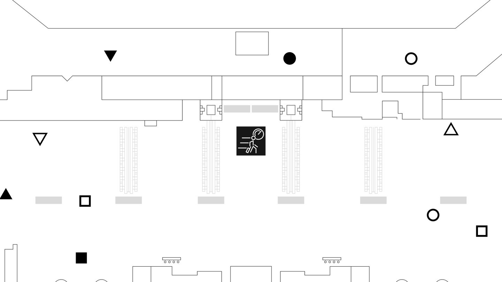
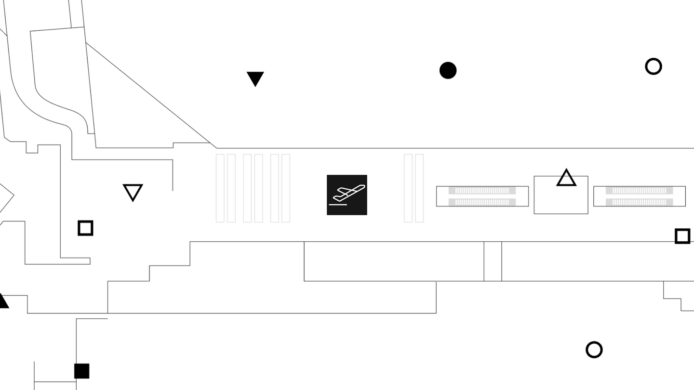

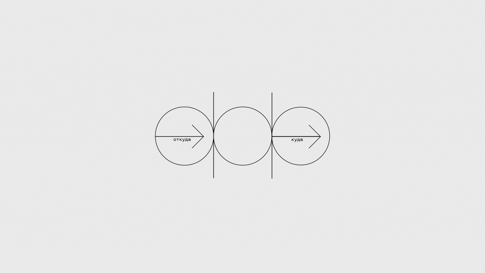
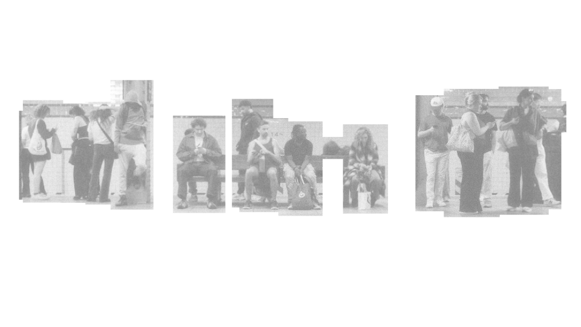
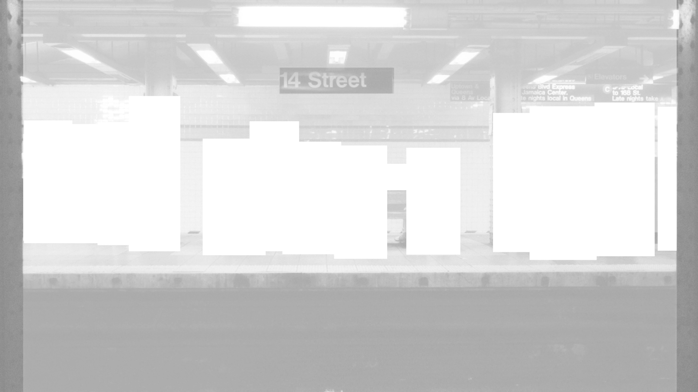
Anthropological place and non-place exist as opposites within the project. This contrast is reinforced through shifts in composition: when the narrative focuses on place, attention is centered on the person; when it moves to non-place, the focus shifts to the space itself.

Grids and frames constrain the white space, literally forming new non-places within it. A consistent visual treatment of photography, video and graphics shows how objects entering these spaces become subject to their logic and part of a unified system.

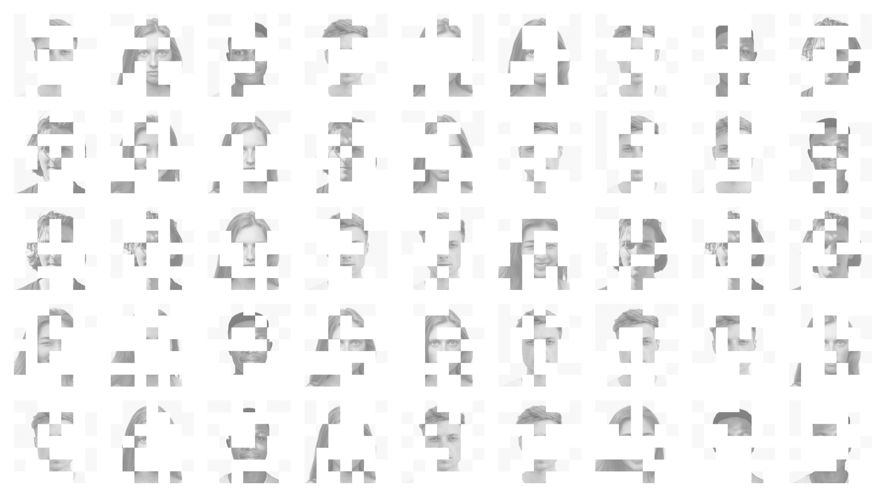

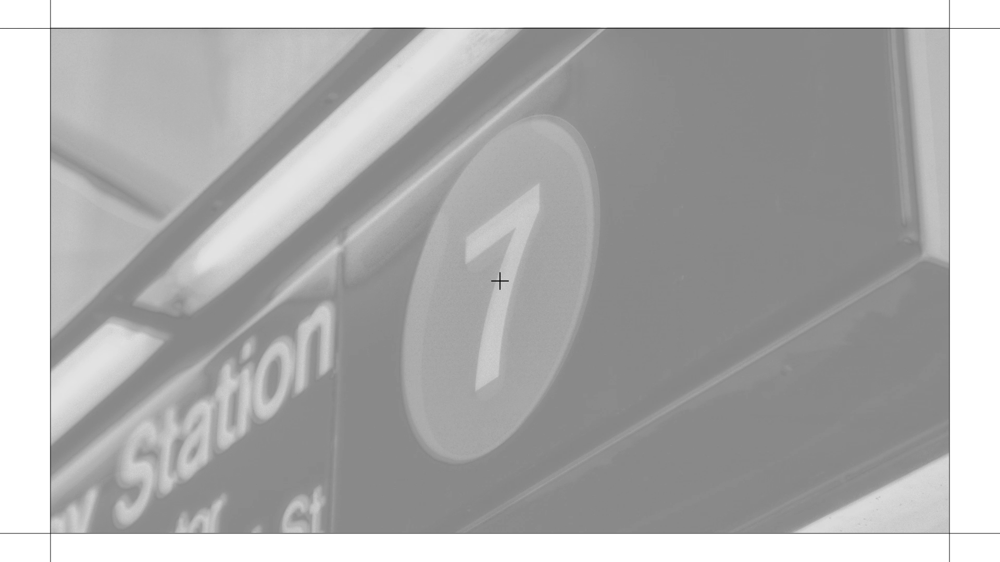
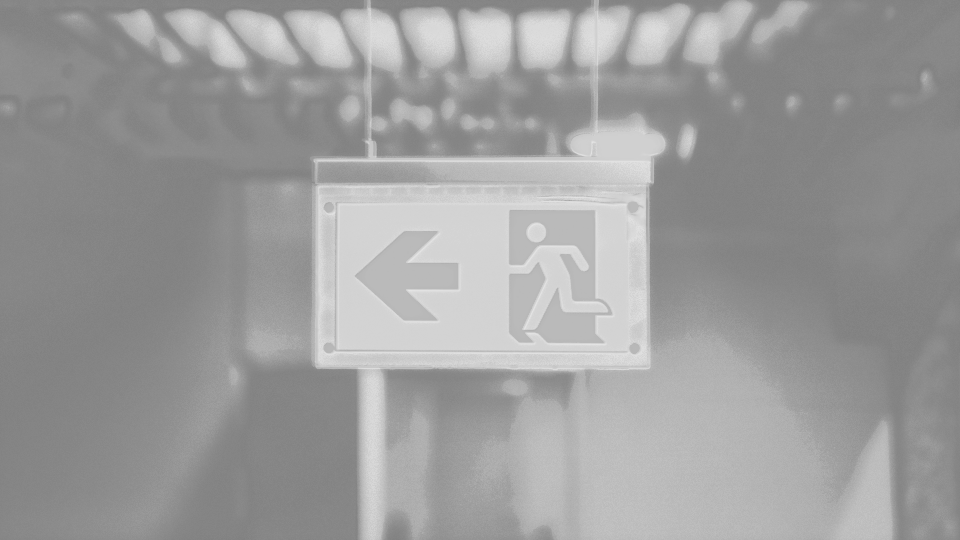

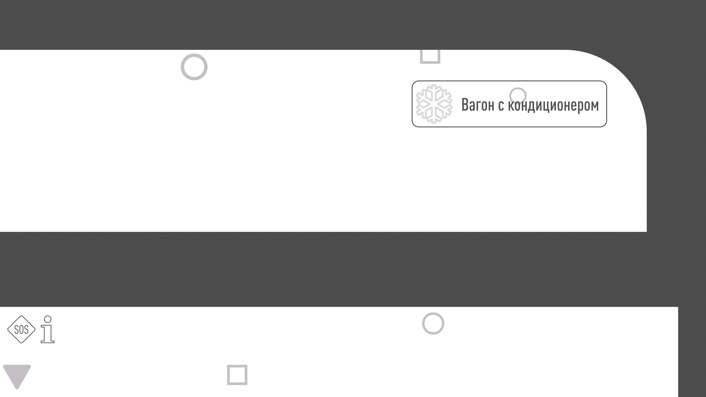
My role: Visual concept development, static graphics, motion design and art direction. I also supervised the voice-over artist and sound designer, shaping a unified visual and sonic language for the video.
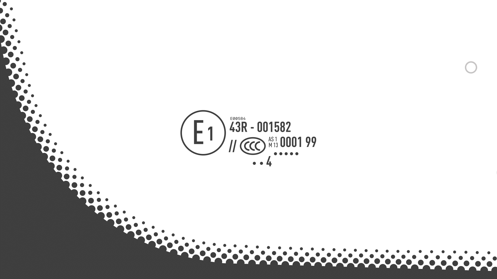